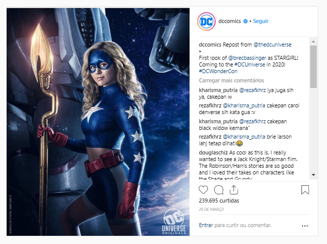

A DC Comics divulgou a primeira imagem de Brec Bassinger como Sideral (Stargirl), protagonista da nova série live-action do DC Universe. Confira:
A trama será ambientada no colegial e mostrará a estudante Courtney Whitmore, a Sideral, se juntando à Sociedade da Justiça da América para combater o crime. A estreia deve acontecer em 2020.
Além de Brec Bassinger como a protagonista, e já confirmou Joel McHale (Community) como Starman, Lou Ferrigno Jr. (SWAT) como o Homem-Hora e Henry Thomas (The Haunting of Hill House) como o Dr. Meia-Noite. Amy Smart será Barbara Whitmore e Luke Wilson Pat Dugan.